＜実験小説＞
ｖｅｒ １．１
（御注意！バージョンが変わっても、内容は、変わってません。）
＜前口上＞
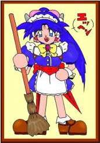
（角さん）こんにちは、ようこそ実験小説へ、私はこの実験小説の司会兼、作者の角さん（かくさん）です。
（鈴） そして、アシスタントの北条 鈴（ほうじょう すず）です。
しかし、角さんこの格好、なんですかぁ〜
（角さん） これは、メイド服と言って、お手伝いさんが着る服だ！
（鈴） それは、わかりますけど何か意味があるんですか？
それに、変なアンテナついてるし・・・・
（角さん） あっそれなっ、なんか最近そういうのがはやってるらしいんで、書いてみた！
まぁいわゆる、に・ん・き・と・りってやつだな！
（鈴） たった、それだけの事だったんですか〜
（角さん） そうだ、なんか文句あるか？
（鈴） う〜〜っ、別に無いですぅ〜（私って角さんのおもちゃなんだぁ〜）
それよりこの実験小説ってなんなんですか？
（角さん） 実験小説とは、俺が個人的に色々やりたい事を、やっていこうって趣旨で始めた小説のことだ。
まぁ、小説書くの初めてなんで、それ自体が実験なんだけどなっ！
（鈴） はぁ、そうなんですか〜
でもっ、これで、失敗してもいいわけたちますね！
（角さん） うっ、ばれたか！
でも、小説の中にも色々仕掛けしてあるぞ！
（鈴） えっ、どこに仕掛けをしてるんですか？
（角さん） それは、あとがきで書くつもりだ！
（鈴） そうですか・・・
では、角さんそろそろ、お話はじめしょう！
（角さん） そうだな、そろそろ画像データが、出てくる頃だろうから・・・
（鈴） では、ごゆっくりお楽しみください！
（角さん） それでは、またっ、あとがきで、お会いしましょう！！
＜御注意＞
パソコンのモニターを御覧の際は
部屋を明るくし、画面に近づき過ぎないよう
御注意ください。
＜一夜の出来事＞ （作）角さん
１．真夜中の二人
深夜、誰もいない裏路地に一人座り込む少女。
季節はもう秋、こんな夜中になると気温はかなり下がる。
「さむい・・・」
少女はただ一言壁を見つめながらそう言った。
気落ちした少女の頬に、刺激が走る。
「よぉ、兄ちゃんなんか困った事でもあるんか？」
そこには、ホットの缶コーヒーを二本持った少年が、ニコニコしながら立っていた。
少女は、キョトンとしながら少年を見ていたが、また壁の一点を見つめる、
ここに座ってしばらくたつが、こういう事を言ってきた男は何人かいた。
『一人にしてくれ・・・』
少女はそう言おうとしたが、もうすでに口を動かす気力も、なくなっていた。
だが、その少年は、
「まぁ、そう言わんでコーヒーぐらい飲んでもいいじゃろ！」
と言って、少女に無理矢理コーヒーを持たすと、隣にどかっと座った。
少女は、その無神経な少年を横目で見た。
その少年の年は１６、７で、いかにも軽そうな今風の格好をしていた。
どこにでもいそうな普通の少年だったが、彼の髪の毛は老人のように真っ白であった。
染めているのかと思ったが、どうもそうではないようだ。
ボーッと少年の顔を見ていると、その少年もそれに気づいたように話し出す。
「わいの名は、悟（さとる）紳馬 悟（しんま さとる）って言うんじゃ、いゃー兄ちゃん見たときびっくりしたぜー」
一人勝手に自分の事を話し出すこの少年にフッと疑問に思う。
そうだ、さっきからこの少年は自分の事を兄ちゃんと呼んでいる・・・
自分の体は、どう見たって少女の体をしているのに・・・・
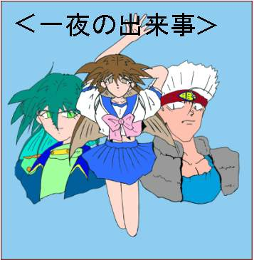
２．事の起こり
今思い起こせば、全ては数時間前にさかのぼる・・・
俺事、貴江 伝士（たかえ でんし）は、数時間前までは立派な男だった。
何気ない退屈な毎日に、俺は嫌気がさしていた。
俺はいつも退屈な毎日を過ごして、そして死んでしまうのかと、思うと気が滅入ってしまう。
フッと周りを見ると、学校帰りの女子高生たちがたむろを組んで楽しそうに歩いて行く・・・
『何がそんなに楽しんだ、何がそんなに嬉しいんだ！』
彼女たちを見ているといつも思う。
しかしその反面彼女たちが、羨ましく見える。
多くの友達に囲まれ、好きなことをして、今という時間を楽しんでいる。
それが俺の目に、とても美しく、そして輝いて見えた。
だが俺はと言うと、会社に入って３年、上司に頭が上がらず、後輩には馬鹿にされ、同僚ともうまく付き合えず、
会社の中で完全に孤立している。
だから、多くの友達などと話し合える彼女たちが、とても羨ましく思えた。
長い髪、短いスカート、ルーズソックス、今の時代は彼女たちの為にあるとでも思える。
金がなければ、そこらの親父にちょっと媚びを売ればいくらでも手に入る時代だ。
『彼女たちが羨ましい、俺もあんな風に、長い髪や、短いスカートを、なびかせて、我が物顔で街を歩いてみたい・・』
そんなことを考えながらフラフラと歩いていたら、いつの間にか見知らぬ裏路地に来ていた。
そう、そこであの女に会ったのだ、あの女に・・・
あの女は、突然俺に話してきた。
「ねぇお兄さん、なんでそんなに暗い顔してんの、今にも人生終わりそうな顔してるわよっ」
妙になれなれしい女は、今の俺には不釣り合いなほど美人だった、俺はどこか飲み屋の客引きかと思い、
その女と目を会わそうとしなかった。
だが、その女はそれを意に返さず、甘い声で、
「ちょっと私と話していかない？」
と、近くにあるラブホテルの方へと指さした。
俺は、ああそう言う女かと、それを断ろうと口を開こうとすると、女は俺の口に人差し指を軽く添え、
「ねぇ、いこっ」
と、言った。
俺は、その声にはどうしても逆らえず、女の誘いに乗ってしまった。
そしてホテルに入った俺たちは、他愛ない話をした。
しばらくして、女は喉が渇いたと備え付けの冷蔵庫からビールとコップを取り出し注ぎだした。
「あなたも飲む？」
と、女は飲みかけのビールを俺に差し出した。
俺はどうしてか、その女の言うことに逆らえず、その飲みかけのビールを一気に飲み干した。
女は、それをニコニコしながら見ると
「今日は、すばらしい日になるわっ」
と、言った。
俺は、その言葉の意味が解らず、女をボーッと見つめていた・・・
しばらくして、酔いが回ってきたのか視界がかすんで見えてきた、酒には強い方ではないが、ビール一杯で
こんなになるほど弱くはない。
それを見ていた女は
「あなた疲れているのね、少し横になった方がいいんじゃない」
と、言った。
俺は女に言われるままベットに横になると急に眠気が襲ってきた・・・
薄れゆく意識の中で、女はクスクスと笑いながら
「また会いましょう・・・」
と、言っているのが聞こえた・・・
３．変貌
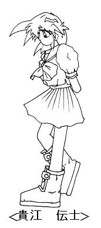
目が覚めた・・・気がつくと、俺と一緒にいた女は、どこかに行ってしまっていた・・・
『先に帰ったんだろう・・・』
と、思いベットから体を起こした。
まだ酔いが覚めてないのだろう、体がだるい。
はっきりとしない頭を、ブルブル振る。
すると妙な違和感を感じる・・・
『俺って、こんなに髪長かったかなぁ？』
そんな事を思いながら、立ち上がろうとすると、俺の酔いは一気に覚めた。
なんと俺は、セーラー服を着ているではないか、一体どうなっているんだと、スカートの
裾をつかみ、めくってみる。
そこには、今まであった物が無く、そして俺は、なんとパンティをはいているではないか！
いきなり起こった事態に、状況が飲み込めず俺は、パニックを起こしていた。
『何だ、一体どうなってるんだ？俺の体は、なんで女の体になってるんだ？』
自分が今まで、培ってきた知識と記憶を総動員しても、この状況が飲み込め無かった。
とりあえず今、自分が置かれてる状況を、把握しようと周りを見回す。
そこは、つい数時間前まで、女と居た部屋のままだった、ただそこには、俺の持っていた物、服など全て無くなって
いた・・・
そう、ここには俺という人間が居たという証拠が一切なくなっていた・・・
『では、俺は一体何になったのだ・・・』
そう言う疑問を持ちバスルームにある鏡で自分の姿を映してみる・・・
そこには、肩にかかるぐらいの髪をしたセーラ服の可愛い少女が立っていた・・・
「なっなんだこりゃ〜〜！」
鏡の中の少女が言う。
俺は、本当に女になったのだ・・・
しばらくして、俺には一つの考えが浮かぶ・・・
『あの女、あの女のせいだ・・・』
俺は、ホテルを飛び出しその女の跡を追った。
しかし、あの女の行方や素性を知らない俺には、どうすることもできない。
それに今の姿じゃ、会社にも行けないし、この少女も一体誰なのかと言うことも解らない・・・
『そう、俺は貴江伝士は、この世から消えてしまったのだ・・・』
誰も今の、俺の姿を見て、俺とは解ってくれない・・・
とてつもない孤独感が俺を襲う。
そして疲れ果て、今に至る・・・・・
４．心眼
俺は、隣に座ってる変な少年を見ている。
なぜ、この少年は俺のことを兄ちゃんと呼ぶのだろう・・・
「兄ちゃんが、変に思うのも不思議じゃねぇーけど、わいは人の心が読めるんじゃ！！」
自慢げにその少年が言う、とても信じられない。
「おいおい、男から女の子に変身した奴が、わいの事を信じられないって思うかのう！」
それもそうだ、俺が女になったことが現実なら、心が読める少年がいても不思議じゃない。
しかし、この少年が俺に何の用があるのだろう・・・
そうすると、少年はニコニコしながら話し出す。
「いやー伝子ちゃんみたいな、可愛い女の子が困ってると、やっぱり男としてほっておけんじゃろ！」
「はぁ〜、伝子ちゃん？」
俺は、すっとんきょうな声をあげる。
「やったぁー、やっと声出して話してくれたぁ〜」
そう言うと少年は、パチパチと手をたたく。
「それよりなんで、俺が、伝子ちゃんなんだ！！」
「えっ、貴江伝士じゃから、伝子ちゃんじゃろ！それよりどうすんだ、このまま伝子ちゃんでおるか、それとも、
わいとその女を探しに行くか、どっちにするんじゃ？」
「探せるのか？」
俺は、半信半疑で少年を見る。
でも、俺には、もうあの女を捜し出す手だてがない、だとすると、この人の心が読めるという少年を、
頼るしかない・・・
「まだ、わいの事を信じてないんか？もう一回言うで、わいは紳馬 悟（しんま さとる）、人の心が読める
心眼の持ち主じゃ！！」
本人は、カッコつけて言っているみたいだが、あのみょーな方言のせいで、ものすごくうさん臭く聞こえる・・・
すると少年は、プイとそっぽを向き、
「田舎者で、悪かったのう！」
と、言う。
こいつは、本当に人の心が読めるのだ、こいつの前では言葉は、必要ないのだ・・・
「まっ、そう言う事じゃな！わいは何でもお見とうしじゃからのう、それにわいの事を少年とかこいつとか、
思わんで、ちゃんと悟って言ってくれ、なっ伝子ちゃん！！」
と、最後の伝子ちゃんを嫌みっぽく言う。
ガキだ、感情のむらが多く、ちょっとした事にも反応するガキだ・・・
「おいおい、この救世主に向かってガキはねぇーじゃろ！」
と、ニコッと笑いながら、俺の顔を見る。
「ああ、そうだな」
俺は、半ば呆れて悟に同意する・・・
今まで、落ち込んでいた気分が、この悟という少年のおかげで、いくぶんか和らいだような気がした・・・
でもっ、まだ事は終わってない・・・・・
５．追跡
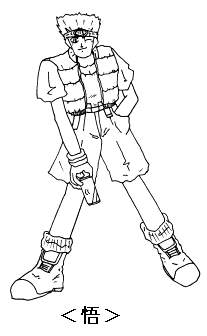
「なぁ悟、いくらお前が人の心が読めるって言っても、どうやってあの女を探すんだ、あの女の手がかりは、一つの無いんだぜ。」
そうだ俺は、あの女と居た部屋を、隅々まで探したのに、手がかりなんか一つも
見つからなかった。
「あーあーっ、これだから素人さんは困るな〜、伝子ちゃんは、まだ俺の心眼の
すごさを解ってねぇーのう。」
そう言うと悟は、俺に覆い被さってきた・・・
「・・・！なっ、何すんだ！！」
悟の瞳に俺が映る、しかしその瞳には、顔を引きつらした少女が見える。
そうだ俺は、女だったのだ、悟の奴、急にサカリがついて俺を襲おうとしてるのか・・・
俺の中で、様々な妄想が頭をよぎる・・・
そして、悟の手が俺の胸にかかろうとする時・・・
「ブハ〜〜〜ッ」
悟が、いきなり鼻血を出し、ヨロヨロと後ずさりする。
「なっなにスケベなこと考えとんじゃ！！わいはただっ、伝子ちゃんのスカーフを借りようと思っただけじゃ！」
悟はそう言いながら、右手で鼻を押さえながら、左手で俺のセーラー服の胸元についている、スカーフを指さした。
「スカーフ？こんな物で何するんだ？」
「いいからそれを、わいに渡せ！！」
何とか鼻血を止めた悟が、左手を出す。
俺は、訳の分からないまま、スカーフを悟に差し出す。
それを受け取った悟は、フッーとため息をつき話し出す。
「伝子ちゃん、わいの心眼の力は、読心だけじゃないんじゃ。」
「このスカーフは、心眼による第二の力、サイコ・メトリーに使うためにいるんじゃ！」
「さいこ・めとりぃ〜〜なんだそりゃ？」
「かぁーっ、あのな〜サイコ・メトリーって言うのは、物に染みついてる、記憶を見る力じゃ！」
「そして、このスカーフの記憶をたどれば、お前がなんで伝子ちゃんになったかとか、うまくいけば伝子ちゃんが
探してる女の家がわかるかもしれん。」
「本当か？」
「ああっ」
と、言うと悟は目を閉じ、スカーフを握りしめた・・・
「・・・・・・・！！」
「解った、行くぞ伝子ちゃん！」
そう言うと悟は、立ち上がり俺に手をさしのべる・・・
「ああっ」
俺達二人は、あの女を追って裏路地を出た。
俺は、悟の後をただ黙ってついて歩く・・・
あの裏路地で悟に出会わなかったら、今頃どうなっていたんだろうと考えただけで、ゾッとする。
やっぱり悟が言うように、あいつは俺にとっての救世主なのだ。
「いやぁ〜、こんなかわいい子に、そんなに想われると、嬉しくなっちゃうのう、それに周り見て見ろよ、
周りの奴等伝子ちゃんが、ぼっけーべっぴんさんじゃから、わいにやきもち焼いてるぜ！」
悟は、そう言い、ニヘラ〜と笑う。
そう言われて周りを見てみると、そこらにいる男どもは、俺に対してイヤらしい視線を送っているが、
悟に対しては、なんだか殺気だった視線を送ってる。
「まさか、周りの奴等、俺と悟が、付き合ってるかと思っているのか？」
そうだ、今の俺の姿は、女の子なんだそれが丁度、同い年ぐらいの悟と、一緒に歩いているんだ、恋人同士に
見えてもおかしくない。
そう考えていると、隣で悟が必死に笑いをこらえている。
「悟！！解っていると思うが、俺は男で、男のお前のことなんか、ちっとも興味ないからな！！」
「ヘイヘイ解ってますよ、伝子ちゃん！」
そう言いながら、悟はゲラゲラ笑う。
くっ、こいつ今の状況を楽しんでいやがる・・・
しかし、悟の奴、本当にすごいと思う、サイコ・メトリーという能力を使いながら、俺や周りの人間の心も
読んでいる。
巷に、自称超能力者というのが多々いるが、こいつの力は、それを完全に、凌駕している。
こいつの様な奴を、本当に超能力者と言うのだろう・・・
しかし悟は、
「人に作られた力は、超能力とは、言わねーよ。」
と、一言言うと、自分の白い髪をなでながら、スタスタと行ってしまう。
それから、俺達二人は、夜の街を、ただ黙って歩き続けた、悟のあの言葉は気になったが、あいつが何も
言わないなら、聞かない方がいいだろう。
人の心が読めるあいつなら、俺が聞かなくても自分から言い出すだろうから・・・
６．再会
あれから俺は、悟の後をついて夜の街を歩き回った。
しばらくして悟が立ち止まる。
「伝子ちゃんついたぞ、女の素性はわからんかったが、何とかアジトの場所は、解った。」
そう言って、悟は、目の前にある、高級マンションを指さした。
「さぁ、入るぞ！」
そう言って悟は、スタスタと中に入っていく。
俺は、悟において行かれないように後ろをついていく。
そして俺と悟は、エレベーターに乗り、７階のある部屋の前で立ち止まる。
その部屋のネームプレートには、こう書いてある。
紳馬 京子（しんま きょうこ）と・・・
「紳馬京子・・・」
「紳馬？」
「おいっ、この名字って悟と同じ名字じゃないのか？」
「ああっ、紳馬京子は、わいの姉ちゃんじゃ」
どっどういう事だ、俺を女にした女は、悟の姉ちゃん？
訳が解らない・・・
混乱する俺に、悟は、
「入るぞっ」
と、言いドアノブを回す。
ズカズカと部屋の奥に入っていく悟、それについて行く俺、さすが高級マンションと言うだけあって広い。
そして部屋の一番奥に、あの女がいた・・・
「あらっ、早かったのねっ」
女は、静かにそう言うと、俺達の方に向き、クスクス笑う。
「おいっ俺は、一体どうなったんだっ、なんで女にになってるんだ、俺がこうなったのは、あんたのせいだろ！」
俺は、感情のままに、がなり立てた。
しかし、女はその言葉を無視して、悟に話しかける。
「悟、久しぶりね、病院から退院出来たみたいね。」
「姉ちゃん、今まで何をしてたんじゃ、わいはずっと姉ちゃんを探してたんだぞ！！」
「ごめんね、心配させちゃったみたいね、でも私には色々やることがあったの・・・」
そう言うと、京子は、冷笑を浮かべる。
「やる事？」
「やる事ってなんなんじゃ？」
「フフッ、あなたなら、私の心を読めば、簡単に解るはずよ。」
「悟・・・」
俺は、何か悪い予感がした・・・
「心配すんなって、わいの力信じてねーんか？」
そう言うと悟は、京子を睨み付ける。
「そうよ、この子の力は、すばらしいわ。」
「他人の心や、感情が手に取るように解る。」
「でも、この力は、悟にとって強すぎるわ。」
そう言うと京子は、クスクス笑う。
「ぐっ、ぐああ〜〜〜〜〜っ」
悟は、突然うめき声を上げて、その場にひざまつく。
「クスクス」
「どう、悟？」
「私の頭の中は、とても素敵な世界が見えるでしょう・・・」
京子は、そう言って、悟を見下ろす。
７．対峙
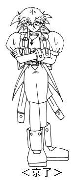
「ぐぅぅぅ・・・ああああっ・・・」マンションの部屋の中に悟のうめき声がこだまする・・・
「悟！一体どうしたんだ、何が見えるんだ？」
一体京子は、悟に何を見せているんだろう・・・
「悟はね、今、私の頭の中にある、膨大な知識と記憶を、読みっているの・・・」
「そんな・・・悟の力は、多くの人達の心を読みながら、それと同時にサイコ・メトリーを
使えるぐらいすごいんだぞ！！」
「お前一人の心を読むくらい大したこと無いだろう！！」
「それが大した事なのよ、私の頭はね、脳改造によって、脳の１００％の力を使うことが
出来るの。」
「それをこの子が全て読みとっているの、この子の普通の脳じゃ耐えられないわ。」
「脳改造？一体何を言っているんだ？」
「フフッ、あなた今まで疑問に思わなかったの？」
「悟がどうしてこんな巨大な力を持ってしまったのか・・・」
「悟の力は、生まれつきじゃないのか？」
「フッ、笑わせないで、生まれつきで悟と同じ様な力が出せるなら、そこらじゅう超能力者だらけになるわね。」
「悟はね、私と同じで、小さい頃に脳改造を受けて、今の力を得たの。」
「姉ちゃん！！」
悟は、痛む頭を押さえながら、京子に怒鳴りあげる。
「そうね、この事は、私達兄弟には、タブーだったわね。」
「それより、伝士を女にしたのは、本当に姉ちゃんなのか？」
悟は、震える声で姉に問いただす。
「そうよ、私に施された脳改造は、私に膨大な知識と知恵を与えてくれた、だけどその知識に、
私の脳は耐えられなくなったの、だから私は、もう一人私を造ることにしたの、そこにいる男を使って・・・」
なっ、何を言ってるんだこの女は。
「フフフッ、混乱してるようね、でも安心しなさい、もうすぐあなたの体細胞変化をおこなっていた
ナノマシーンが脳に到達して、あなたの記憶を消し、そしてあなたの脳に私の記憶を書き込むの。」
そう言うと、京子は冷たくそして無機質な笑みを浮かべる。
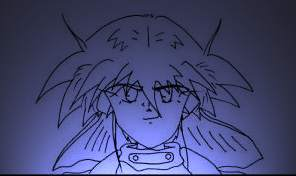
「そう、もうすぐあなたは、私になるの・・・」
「姉ちゃんなんでそんなひどい事をするんじゃ！」
「姉ちゃんのやってることは、人殺しと変わらんことなんじゃぞ！」
「何を言っているの、私は人なんか殺しはしないわ、死ぬのは私、そしてその代わりに、彼が私になるだけ・・・」
そう言って、薄ら笑いを浮かべた京子は、
「悟、また会いましょう、今度は、その子の体で・・・」
その瞬間、京子は、マンションのベランダから飛び降りた・・・
「姉ちゃん！！」
悟と俺は、京子を追いかけてベランダに飛び出る。
でも、京子は階下のアスファルトの上に、ぐったりと横たわっていた・・・
「姉ちゃん・・・なんでなんでこんな事したんじゃ、昔はもっと優しかったのに・・・」
「なんでじゃ〜〜っ」
悟の叫び声が夜の街に、こだまする。
そのとき、俺の頭の中で変化が起きた、なんだか頭の中がぼんやりしてきた、そうだ京子の言っていた
ナノマシーンが、とうとう俺の頭に昇ってきたのだ・・・
俺が消える、今まで生きてきた全ての記憶が思い出が消えてしまう、怖い、自分が消えてしまうことが怖い、
助けてくれ！誰か俺を助けてくれ！！
俺は、消えたくない・・・
８．記憶
俺の頭の中で、激しい頭痛が続く、俺の頭の中で、ナノマシーンが暴れまくっているからだろう。
こいつを止める手がかりを持つ、紳馬京子はもうこの世にはいない、どうすればいいんだ。
俺は、このまま消えて、あの女になってしまうのか・・・
「大丈夫じゃ、わいが何とかしてみせる、姉ちゃんを人殺しにさせてたまるか！！」
そう言うと悟は俺に抱きつく。
「悟、一体どうする気だ・・・」
俺は、消え入りそうな声で、悟に聞いた。
「伝子ちゃん、心配すんなわいが何とかしてみせる、さっき姉ちゃんの心を読んだとき、たった一つだけ
伝子ちゃんを助ける方法を見つけたんじゃ！」
そう言うと悟は、俺にゆっくりと話しかけてくる。
「あいにく、伝子ちゃんの体に埋め込まれた、ナノマシーンはわいには、止めることはできん。」
「どういうことだ、ナノマシーンが止められないとなるともう打つ手がないんじゃないのか。」
「安心しろ、ここでわいが持つ最後の力、サイコ・トレースを使って、わいが伝子ちゃんの記憶を全て吸い取って
わいが伝子ちゃんになってやる。」
そう言うと悟は、俺の体をさらに ぎゅっと抱きしめる。
なんだかすごく気持ちが落ち着く・・・
「わいもじゃ、なんだか伝子ちゃん、昔の姉ちゃんと同じにおいがする・・・」
そう言うと悟は、俺の顔を見つめて微笑む。
「伝子ちゃん、思い出すんだ、自分のことを、全部わいに教えてくれ・・・」
俺はそれにうなずくように、目を閉じ、ゆっくりと自分のことを思い出す。
俺の意識はゆっくりと、悟と京子の記憶の中に沈んでいく・・・・・・・
８−１．京子の記憶
暗い部屋、
そこにあるベットに横たわる私、その横には悟がいる・・・
父は、濁った瞳で私を見つめる、狂喜の笑い、私は父が怖い・・・
気がつくと私は、妙に頭が冴えているのに気づく、本を一度読めば全てを、一語一句覚えている。
父は、笑う。
怖い、父が私が怖い・・・・
時が経つにつれて、私は父の持っている全ての本を理解していた、子供の私にはとうてい理解できるはずのない
本を理解していた。
でも、私の知識に対する欲求は満たされることはなかった・・・
近くにある図書館の、本を全て記憶したとき、父は発狂した。
そうだ、幼い私がすでに、父の知識を越えたことに発狂したのだ・・・
しかし私の欲求は満たされることはなっかた。
私は多くの知識を得る代償に、人の心を失った、人の倫理観や道徳心を・・・
私は、私で無くなってしまう・・・
周りの人間が、私より劣る動物に感じてしまう。
父と、同じように・・・
怖い、人間でなくなってしまう私が怖い・・・
しかし、私の欲求は止まることを知らない、より多くの知識を、知恵を求めて、私を突き動かす・・・
だが、膨らみすぎた風船はいつかは破裂する、そう私の脳は、多くの知識によって肥大し、限界に来ていた・・・
私の死は、確実に迫っていた、悟に会いたい、もう一度昔のように抱きしめたい、唯一、残っている私の自我は、
悟への想いだけ。
だけどそれも、膨大な知識によって歪められていく。
生への執着、死にたくないもう一度昔に戻りたい・・・
私の、もう一つの心は囁く、
『お前の知識は、何のためにある・・・』
私は、その言葉に導かれるように、研究を始めた・・・
死を乗り越えるために、私が生き残るために・・・
そしてとうとうその答えを見つけたのだ・・・
私の脳は、肉体は、もう限界だ・・・
だったら他の人間を、私にすればいい・・・
私は、京子・・・
京子であって京子でなく、
人間であって人間を越えた者・・・・・
８−２．悟の記憶
白い部屋、わいの中で響くノイズ、頭が痛い・・・
わいと発狂した親父を残して、姉ちゃんが家から出ていった後、わい等は、この病院に引き取られた・・・
親父のせいで、わいは人の心が読めるようになった。
そのせいで、いつもわいの頭の中にノイズがかった人の声が聞こえる。
それは、壊れたラジオの様にチューニングを絶えず変え、永遠とわいの頭で鳴り響いている・・・
うるさい、うるさい、うるさい、うるさい、うるさい、うるさい、うるさい・・・・
やめてくれ〜〜〜〜〜〜
聞こえてくるのは、人の怒り、ねたみ、憎悪、全ての負の感情・・・・
嫌だ、やめてくれ、わいは、そんなの聞きたくない！
わいは、一人で居たいんじゃ、やめてくれ、どんなに叫んでも、そのノイズは、消える事がない。
気が変になりそうだ、心が壊れてしまう・・・
気がつくと、わいは、体中に傷を付け、髪の毛が真っ白になっていた。
わいの力は、日増しに強くなる、人の心が、わいの心を、侵略していく。
やめろ〜、やめてくれ〜〜
他人の心に、操られ、二重、いやっ、多重人格になった時もあった。
もう疲れた・・・
何もかもが、嫌になった・・・
そして、わいは、心を閉ざした・・・・
それから、数年経ったある日、わいは一人の老医師に会った。
その老医師は、とても優しく、暖かだった・・・
他人と接する事を拒絶してるわいを、親身になって心配してくれた。
心の読める、わいには、それが良く解った。
わいの心に、老医師は、どんどん入って来た、
だがっ、他の人間のように、嫌ではなかった。
それは、老医師の心が裏表無く、暖かかったからだ。
わいは、毎日の様に、その老医師の心を追った。
老医師は、常に、人の事を考え、そして、自分がその人の為に、どう動けるかを考えて行動していた。
その心は、まるで、海の様に広く、そして深い愛情に、満ちていた・・・
そして、わいは、心を取り戻した。
「悟、これから姉ちゃんを探しに行くんか？」
「うん、じーちゃん先生には、世話になったけど、おらん様になった、姉ちゃんが心配じゃけんのう。」
「そうか、悟、これだけは覚えとけ、人間言うんは、一人じゃ生きていけん。」
「じゃから、わし等は、常に他人と付きあっとらんといけん。」
「その中で、自分は、人の為にどんだけ動けるか、どんなに親身になれるかで、その人間の価値は決まる。」
「お前は、人の気持ちが、充分すぎるほど、解るはずじゃ。」
「それなら、自分がどういう風に動けばいいか解るはずじゃろ。」
「まぁ、難しく考える必要は無い。」
「心に余裕があれば、自分の進む道は、おのずと見えて来るはずじゃからのう。」
そう言うと、老医師は、ニッコリ笑った。
「じーちゃん先生、今まで本当に有り難うございました。」
そして、わいは病院を退院した。
８−３．伝士の記憶
なにもない・・・
俺は、他人に、どう見られているんだろう・・・
他人の気持ちが解らない。
だから、誰も俺のことを、解ってくれない。
友人はいるが、親友はいない。
常に、俺の中には、孤独感が漂う・・・
孤独だ、誰も俺の事には、気付いてくれない。
誰も俺の気持ちには、気付いてくれない。
そんな毎日を送るのが嫌だった、そんな自分が嫌だった。
自分を変えたい、もう何も無い自分を変えたかった・・・
だけど、自分を変える事は出来なかった・・・
どんなにがんばっても、俺は、俺でしかない・・・
だから、女子高生に、なってみたいと思っていた・・・
彼女達みたいに、多くの友達の囲まれてみたい・・・
他人に、ちやほやされてみたい・・・
「じゃあ、なんで私を拒むの？」
「私は、あなたが望む姿に造り変えてあげたのに。」
そうだ、俺の望みは叶った。
だけど、何も変わらなかった。
いくら容姿が変わっても、孤独感は無くならなかった・・・
「そう、あなたには何も無いの・・・」
「あなたの事を、想う人も、そして、あなたが想う人も、だからあなたは、孤独なの・・・」
そうだ、俺は、たった一人、孤独なんだ・・・
「じゃあ、あなたが居なくなっても、誰も困らない、あなたが変わっても気付かない。」
「なら、あなたが消えても問題ないわね。」
「だって、あなたは、初めから何も無いんだもの・・・」
俺には何も無い、だけど消えるのは、俺が無くなるのは嫌だ・・・
「おかしいわね、何も無い物は、もうそれ以上無くならないわ。」
でも、消えるのは、嫌だ！
「だけど、これ以上あなたがここに居ても、孤独感は無くならないわよ。」
「あなたが消えれば、もう二度と孤独感に、悩まされる必要は無くなるのよ。」
「さぁ、消えなさい。」
俺は、消える・・・・・・・
「駄目じゃ伝士！姉ちゃんの言葉に惑わされるな！」
もういい、俺はもう一人で居るのは、嫌なんだ・・・
だったら、消えてしまった方が楽になれる・・・
「バカヤロー！他人に自分の気持ちをよう伝えんで、一人でいじけて、孤独じゃ、孤独じゃ、言うなやー！」
だけど、誰も俺の事を解ってくれない・・・
「それは、伝士が、他人のことを解ろうとしてなかったからじゃろ！」
「人間いうんは、他人の中から、自分を見つけていくもんじゃないんか？」
でも誰も、俺の事を必要としてくれない・・・
「それは、伝士が、他人を必要としてないからじゃろ。」
「人を、信じてないから、自分が信じられないんじゃねぇんか？」
「全ては、伝士の思いこみだけなんじゃ！！」
でも、もう遅い、俺はもうすぐ消えてしまう・・・
「遅くなんか無い！！」
「今から変わりゃーええんじゃ、素直に、自分の気持ちを他人に伝えて、そして他人の気持ちを聞いて
やりゃーええじゃねーか！」
「わいは、伝士を信じとる、昔のわいみたいに、心を閉ざすのはやめろ！」
「わいが伝士を助けちゃる、だからあきらめんな、姉ちゃんなんかに負けんな！！」
今からでも、間に合うかな？
こんな俺でも、変われると思うか？
もう、一人で居なくていいのか？
「ああっ、現にもう伝士は一人じゃねーじゃねーか！わいが居る、わいとお前はもう親友じゃねーのか？」
いいのか、こんな俺でも・・・
「あたりめーだ！！」
「さあっ、もう朝が来る、そろそろ起きる時間じゃ。」
「がんばって、がんばって自分を変えて見ろ、そしたらもうお前は、一人じゃなくなる・・・」
わかったやってみる、もう一人になるのは嫌だから・・・
「じゃあなっ、そろそろお別れじゃ、伝士がんばれよ！」
その悟の言葉を聞いたとたん、俺の意識は、水中を浮かび上がるように覚醒していく・・・
９．朝
日が昇る・・・
俺は、朝日の光に気付き目を覚ます。
「まぶしい」
太陽の光に、まだ目が慣れてないようだ・・・
スズメが囀る清々しい朝・・・
朝特有の静けさが、俺を包む、まるで昨日の出来事が夢だったかのように・・・
だけど昨日起こったことは、全て事実なのだ。
俺の両腕には、微かな寝息を立てる少女が居る。
昨日、俺の心が入っていた体だ・・・
そう、俺は今、悟の体にいる、しかしこの姿は、悟であって悟じゃ無いのだ、この体は、どことなく、
男だった時の俺に似ている。
悟が言うように、悟はサイコ・トレースによって、俺の全てを、自分の体に移植したのだ。
しかし、一つの体に、二つの心は、入ることは出来ない。
それは、悟が一番良く知っていることだから・・・
だから、悟は消えてしまったのだ・・・
あいつは、俺は助けるために、自分の心を消してしまったのだ、こんな俺の為に・・・
「バカヤロウ！俺を助けるために、自分を犠牲にしたら、何もならないじゃないか！！」
俺は、泣いた・・・
今まで、他人の為なんかに、涙を流した事など無かったのに・・・
泣いた・・・
せっかく、一人じゃ無くなったと思ったのに・・・
せっかく、心から信じられる親友を持ったのに・・・
悟は、もう居ない・・・
とてつもない喪失感が、俺を襲う・・・
「悟、俺はお前が居なきゃいけないんだ、なんで、なんでまた、俺を一人にするんだよ！！」
そう言うと、少女を抱いている腕に力が入る・・・
「おいっ伝士、わいを勝手に殺すなよ。」
と、耳の横から、高い少女の声が聞こえる。
「えっ！」
俺は一瞬耳を疑う。
しかし、その方言がかった喋り方に、聞き覚えがある。
「一人で感傷に、ふけっているのに悪かったのう、なんか知らんけど、わいの意識が、伝子ちゃんの中に入って
しもうた。」
「おかげで、わい命拾いしたみたいじゃ。」
そうか、そうだったんだ、理由は理解できないが、
悟は、悟は、生きていたんだ・・・
「おいおい、男がそんなに、グシグシ泣くもんじゃねーぞ！！」
俺は、みっともないくらい、悟の胸で泣いた・・・
悟は、黙って、その小さな胸で、俺が泣きやむまで抱いていてくれた・・・
俺は、この一夜の出来事で、悟というかけがえのない親友を手に入れた・・・
俺は、こいつと居る限り、どんな苦難も乗り越えることが出来ると思った。
１０．その後
あの事件から、数週間経った・・・・
あれから、俺はいつもどうり普通の生活を、送っている。
だけどもう、前みたいに、孤独じゃない、会社の仲間ともうまくやっている。
悟が言う様に、自分に素直になり、その気持ちを相手に伝え、そして相手の気持ちを理解する。
それがほんの少しだけ理解できるようになったからだと思う。
これも全て、悟のおかげだ。
でっ、その悟はと言うと・・・・・・
「伝士ぃ〜〜、せっかくの休みなんじゃから、どっか、つれてってくれーやー」
とっ、こんな風に、俺のアパートに居座っている。
「それより悟、京子のこと探さないでいいのか？」
そうだ、あの朝俺達は、マンションから落ちた京子を、探しに行った。
しかし、京子の死体は、どこにも無かった・・・・
「そうだなぁ〜、姉ちゃんなぁ〜、あの時あんだけ探しても、おらんかったちゅう事は、姉ちゃんまだ生きとる
ちゅう事に、なるんかのう。」
「まあっ、チマチマ探すんも性にあわんし、姉ちゃんが生きとったら、その内会えるじゃろう。」
「それにわいの心眼の力、のうなってしもうたし、手の打ちようねーじゃろ！」
「そりゃあ、そうだろうけど本当にいいのか？」
そうだ、あの夜、俺と悟は、体を入れ替えてしまった。
だから心眼の力は、俺の中にあると言う事になる。
しかし、俺には、その心眼の力を使うことは、出来ない。
悟が言うには、サイコ・トレースしたときに、悟の脳構造も変わってしまったからだと言っていた。
どちらにしても、真実は全て、俺の理解の範疇を越えている・・・
「なぁ〜、伝士ぃ〜、一人でブチブチ言っとらんで、どっか行こうでぇ〜」
「そうだな、考えたって、解らないもんは、解らないんだ。」
「よし、家でゴロゴロしても、体が腐ってしまう。」
「悟、お前行きたい所あるか？」
「えっ、わいが決めてもいいんか？」
「わい、出銭ランド行ってみたい！！」
「でっ、出銭ランド？！」
「あそこは、入場料がむちゃくちゃ高いんだぞ！！」
出銭ランドとは、俺のアパートから電車で、一時間ちょっとでいける、巨大遊園地の事だ。
しかし、この遊園地は、その名の通り無茶苦茶、金がかかる所なのだ。
「えぇ〜〜、駄目なの〜、伝子、とっても悲しぃ〜」
悟の奴、こんな時だけ女の子らしくする。
それがまた、可愛いので、たちが悪い。
「しかし、その電力会社のマスコットみたいな名前、何とかならないのか？」
「いいじゃろ、わいは、この名前、気に入ってるんじゃから！」
「それより〜、伝士兄ちゃん、伝子を出銭ランドに、つれてってくれるの〜〜？」
「ああっ、解ったよ、連れて行ってやるよ！」
「今日は、嫌なことを忘れて、パァーと遊びまくるぞ！！」
「本当！やったぁー！伝子嬉しい〜〜！！」
そう言って悟は、俺に抱きつく。
「おいおいっ！ベタベタするなよ〜〜！！」
「なぁに、赤くなってんじゃ、それより早く行こうぜ！！」
「そんなに慌てなくても、出銭ランドは、逃げやしないよ。」
「バカッ！」
「早く行かねーと、今日中に、全部の乗り物、乗れ無いじゃねーか！！」
「まさか、本当に全部、回るつもりかよ？」
「あたりめーじゃ！」
「サッサと行くぞ！！」
そう言うと、悟はニッコリと笑う。
それは、まるで無邪気な少女のような、微笑みだった。
「よし、サッサと行って、思い切り遊ぶぞ！！」
「そうこなくっちゃ！！」
そう言って、悟は、俺の手を引いて、家を出る。
悟の手は、とても小さくて、そして暖かかった。
俺は、悟のおかげで、変わることが出来た。
悟のおかげで、多くの友達を得ることが出来た。
俺は、一人じゃない。
一人じゃないんだ！
（作） 角さん
（絵） 角さん
（方言指導） おやじ
この物語はフィクションです。
実在の人物、団体名とは、
関係ありません。
「おおぃ、伝士、折角、出銭ランド来たんじゃから。」
「一緒に、写真取ろうで〜〜！」
「えっ」
「よしっ、行くぞ〜〜！」
「はいっ、チーズ！」
ジ〜〜〜〜〜〜〜〜〜〜〜〜〜〜ッ
カシャッ！！
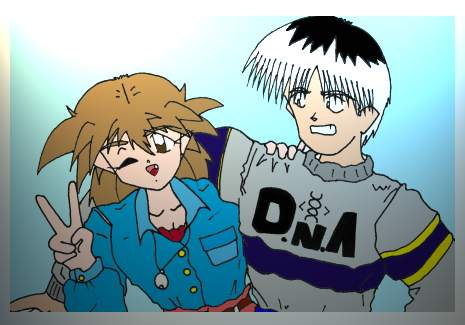
（おしまい！）
＜後口上＞
（鈴） お疲れさまでした！
角さんのお話どうでしたか？
そう言えば、角さん、この実験小説の仕掛けって、何だったんですか？
（角さん） ドナドナドナァ〜、子牛をつぅ〜れぇ〜て〜〜
（鈴） どうしたんですか、角さん？
（角さん） う〜う〜う〜〜〜
（鈴） えっ、これ読めって？
えっと？
あとがき
う〜〜、疲れた。
無茶苦茶疲れた・・・
小説書くなど、初めてなんで、誤字、脱字、文法がおかしいなど、色々あるでしょうが、ここまで読んでもらえて
感謝してます。
なにぶん、素人なので、全て手探りでやりました・・・
そのため、かなり強引で、ご都合主義な所がありますが、全て私の、腕のなさから来ている物です。
でっ、この実験小説の仕掛けとは、方言の使用による、キャラクターの個性化だったんですけど、悟の奴、
かなり濃いキャラになってしまいました。（主役食ってるし・・・）
それで、友人のおやじ（あだ名）に方言聞いて、勉強しました。（どこの方言かは、内緒です。）
そのため、かなり読みにくいと思いますが、許してください。
後は、小技を少々使っています。
それから、お話の事ですが、今まで個人的に色々書いてきているのですが（ノートに書いたスケベ漫画ですが）
今回は、それらの話とかぶらないように、かなり突飛な設定に、なってしまいました。
それに、萌えるか？
と聞かれると、
さあ？
と答えるしかないです。
なんせ、スケベを自ら封印してしまいましたから。
でも、初期設定では、京子は淫魔で、男をサキュバス（女淫魔）にして、うんたら、かんたら、と言うお話でしけど、
スケベ話なので、やめました。
そのため、京子のイラストが、あんなデザインになってしまってるんです。（めんどいので直して無いだけですが）
まあ、色々突っ込むところが、あるでしょうが許してください。
さらば、心眼。
さらば、ナノマシーン。
さらば、一夜の出来事・・・・
伝士が言ってましたが、この話は、俺の理解の範疇を越えてしまってます！！
とっ言う訳で続きの書ける人は、書いてやってください。
長々と書いてきましたが、ここまで読んでくれて、本当に有り難うございます！
ではっ、また会えることを祈りつつ
さようなら〜
（鈴） 最後に、おまけシナリオをどうぞ！
〜おまけ〜
冷たい、アスファルト・・・・
そこに、横たわる私・・・
私は、もうすぐ死ぬ、しかし怖くない・・・
だって、私は生まれ変わるのだから・・・
あの男に打ち込んだナノマシーンは、体細胞を変化させ、脳の記憶を入れ替える。
だから、私は死ぬ、私は二人も要らないのだから・・・
いくら、ナノマシーンで、他人を私に造り変えても、いくらかは、その人間の個性を引き継ぐ。
それでは、完全な私ではない。
それは、私であって私で無いのだから・・・
だから、無気力で、これと言った個性を持たない人間を選んだ・・・
しかし、それでも拒絶反応が出るだろう。
この世に、完全に自分の個性を、消せる人間は居ないのだから・・・
でも大丈夫、これは、私の計画の、ほんの通過点でしかないのだから・・・
そう私は、完全なる複製、パーフェクト・クローンの研究を完成させている。
完全な、私・・・
遺伝子レベルでの、完全な、私の複製・・・
だが、パーフェクト・クローンが、完全に今の私に成り代わるためには、少し時間がかかる。
しかし、私には時間がない・・・
パーフェクト・クローンが成熟するまで、私の命は、保たないだろう。
だから、クローンが成熟するまで、管理する人間が必要になる。
それは、他人には、任せられない・・・
この研究の全てを把握してるのは、私しか居ないのだから・・・
だから、他人を私に造り変える、かりそめの私に、クローンの管理をさせるために・・・
もうすぐだ、もうすぐ私は、生まれ変わる。
もう、今の私の役目は、全て終わったのだから・・・
そろそろ、私の体に埋め込んだ、ナノマシーンが、私の体を、分解し始める頃だろう。
私の死体が見つかると、後々矛盾が起こってしまう、だから私は、誰にも見つから無いように消える・・・
時は、流れる・・・
ここは、とある田舎町の外れにある廃屋。
ここの主は、数年前に死んでいる。
そこに、紳馬京子の研究室がある・・・
そう、彼女が、彼女の父の研究室を改造して造った物だ。
しかし、彼女は、もうこの世には居ない。
悟と伝士のせいで、彼女の計画は、狂ってしまったのだ。
無人の研究室の中で、微かな機械音が聞こえる・・・
もう二度と、ここの主は戻ってこないのに、そこにある数々の機械は、動き続ける・・・・
その部屋の中央にある、大きな試験管の中で、息づく生命・・・
そう、それが京子が残した最後の希望。
その、薄朱色の液体に、浮かぶ胎児・・・
彼女は、新たな生命として生まれ変わるのだ、己の死を乗り越えるために・・・
そして、その胎児は眠る。
次なる再生を夢見ながら・・・
もう一度、愛する弟を抱きしめる為に・・・・
もう一度、昔の自分に戻るために・・・・
（ＥＮＤ）
さて、これからは、１．１を、見てくれた人だけのお楽しみ。
気付いた人は、ラッキーですよ！
でも、その２以降は、バージョンアップするつもりは無いので、気をつけて下さい。
今回だけです。
＜角さんの、お絵かきコーナー！＞
うちって、こんなのばっかり・・・
では、今回は、俺がどうやって絵を描いているか、書いていこうと思います。
１．さて、まず白い紙を用意しましょう。
本当に、真っ白ですね！
名人と呼ばれる彫物師は、一本の木の中にすでに彫る物が埋まっており、
ただ、それを、掘り起こすだけだと、言いますが、素人には、そんな物は見えません！
見えたら、やばいです！
なので、書く物を、決めましょう。
う〜〜〜む、何書こうかな〜〜〜
よし！
２．書く物が決まったら、鉛筆で、下書きします。
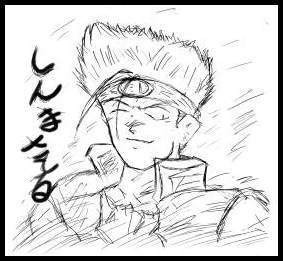
自分の、思いの丈を、鉛筆に込め！
ガリガリと書きましょう！
下書きなので、書く物が解る程度でいいと思います。
悟の、心眼バンダナは、なかなかナイス（死語）です。
３．この、下書き上に、ペン入れをします。
下書きの上を、ペンで丁寧になぞります。
俺の場合、貧乏なので、一本１００円の、水性ペンを使ってます。
失敗は、許されないので、結構、腕に力、入ります。
う〜〜〜、腕がつる！
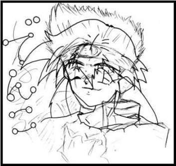
４．ペン入れが終わったら、鉛筆で書いた、下書きを、消しゴムで消します。
ゴシゴシ、ゴシゴシ・・・・
力を入れすぎて紙を破らないようにしましょう。
ちなみに、俺は、ケント紙を買う金がないので、
会社の印刷ミスしたコピー用紙を貰ってきて、その裏を使って書いてます。
貧乏って、嫌ですね〜〜〜
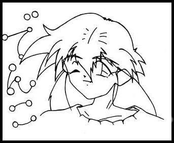
ふうっ、下書きはきれいに消えたみたいですね！
５．最後に、色を付けて、終わりです。
とりあえず、色鉛筆使ってみました。
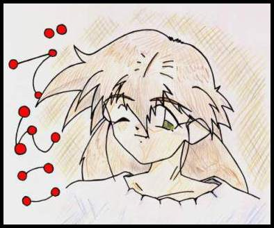
はい！
伝子ちゃんの、出来上がり！
（角さん） どうでしょう、皆さん、参考になりましたか？
（オヤジ） 参考に、なるかぁ〜〜〜！！
ドベシ！！
（角さん） はうわ〜〜〜、殴らんといて〜〜〜
（オヤジ） うるせい！！
途中で、絵が変わっとるじゃね〜〜かぁ！！
ゲシ、ゲシ、ゲシ、ゲシ、ゲシ・・・・
（角さん） あう、あう、あう〜〜〜〜
ずびばぜんでした〜〜〜〜〜〜〜
（ちゃんちゃん）
御注意：これは、あくまで、ネタなので、本気にしないで下さい。
ｋａｋｕｓａｎ＠ｍｂａ．ｎｉｆｔｙ．ｎｅ．ｊｐ